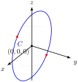

1.
Integrate the scalar function \(f(x,y,z)=\sqrt{x^2+z^2}\) over the circle path parameterization:
\begin{equation*}
\mathbf{r}(t)=(4\cos t)\mathbf{i}+(4\sin t)\mathbf{k}, \qquad 0\leq t\leq 2\pi.
\end{equation*}
Solution.
Step 1: Compute the Derivatives and the Arc Length Element \(ds\)
From the given vector path equation, the components are:
\begin{equation*}
x(t) = 4\cos t, \quad y(t) = 0, \quad z(t) = 4\sin t.
\end{equation*}
Differentiating each coordinate component with respect to the parameter \(t\) yields:
\begin{equation*}
\frac{dx}{dt} = -4\sin t, \quad \frac{dy}{dt} = 0, \quad \frac{dz}{dt} = 4\cos t.
\end{equation*}
We substitute these into the 3D arc length differential equation:
\begin{equation*}
ds = \sqrt{\left(\frac{dx}{dt}\right)^2 + \left(\frac{dy}{dt}\right)^2 + \left(\frac{dz}{dt}\right)^2}\,dt = \sqrt{(-4\sin t)^2 + 0^2 + (4\cos t)^2}\,dt
\end{equation*}
\begin{equation*}
ds = \sqrt{16\sin^2 t + 16\cos^2 t}\,dt = \sqrt{16(\sin^2 t + \cos^2 t)}\,dt = 4\,dt.
\end{equation*}

Step 2: Setup and Evaluate the Line Integral
Next, we substitute the component equations into the integrand function \(f(x,y,z)\text{:}\)
\begin{equation*}
f(x(t), y(t), z(t)) = \sqrt{(4\cos t)^2 + (4\sin t)^2} = \sqrt{16\cos^2 t + 16\sin^2 t} = 4.
\end{equation*}
Combining the function value, the element \(ds = 4\,dt\text{,}\) and our parameters from \(0\) to \(2\pi\text{:}\)
\begin{equation*}
\int_C f(x,y,z)\,ds = \int_{0}^{2\pi} 4 \cdot (4\,dt) = \int_{0}^{2\pi} 16 \, dt = \Big[ 16t \Big]_{0}^{2\pi} = 32\pi.
\end{equation*}
The exact value of the line integral around the vertical circle path is \(32\pi\text{.}\)